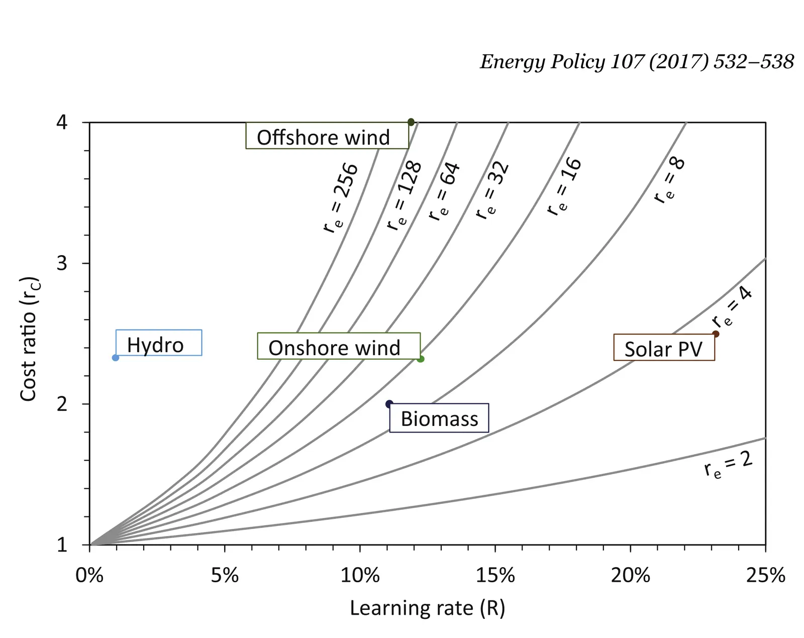

Evaluating relative benefits of different types of R&D for clean energy technologies
Key finding. Comparing the two through the learning investment — the subsidy needed to bring a new technology to cost parity — an equal investment producing an equal immediate cost reduction is more effective when it shifts the learning curve than when it merely follows it, and the advantage grows as starting cost rises and the learning rate falls.

What question did this research address?
Clean energy technologies that start out more expensive than fossil alternatives need subsidy to reach parity, and research and development is meant to shorten that. But R&D is not one thing.
Some research produces knowledge that deployment would eventually have generated anyway; other research produces innovations that deployment would never have produced. This paper asked whether that distinction changes how much a research dollar is worth.
What did we find?
The two types are defined precisely. Curve-following R&D lowers cost by producing knowledge that would otherwise have been gained through learning-by-doing; curve-shifting R&D lowers cost through innovations that learning-by-doing would not have produced.
The comparison uses learning investment as the yardstick: the total subsidy required to reach cost parity with the conventional technology, which captures the whole path rather than an instantaneous cost.
Holding the immediate cost reduction equal, curve-shifting R&D reduces the learning investment more. Following the curve buys progress that deployment would have delivered regardless; shifting it buys progress that would not have arrived.
The gap widens for technologies with a high starting cost and a low learning rate — the hardest cases, where waiting for learning-by-doing takes longest.
The policy conclusion is stated plainly: other things equal, governments setting research policy should weight transformational change over incremental change.
Why does it matter?
It gives a reason to prefer risky research that is not simply appetite for risk. The argument is about non-substitutability — incremental improvement competes with a process that would have happened anyway, and transformational improvement does not.
The condition under which the advantage is largest is the useful part. Cheap, fast-learning technologies do not need curve-shifting research; expensive, slow-learning ones do, which is a concrete rule for allocating a research budget.
It also sits against the finding that past learning rates barely predict future ones. If the curve itself is unstable, then research that moves the curve is acting on the thing that actually varies.
Citation, data, and code
Soheil Shayegh, Daniel L. Sanchez, and Ken Caldeira (2017). Evaluating relative benefits of different types of R&D for clean energy technologies. Energy Policy 107, 532-538.
Related
- If cutting emissions pays for itself, why is it so hard to do?
- Variability of technology learning rates (Carlino et al., 2025)
- The value of reducing the Green Premium — cost-saving innovation, emissions abatement, and climate goals (Caldeira et al., 2023)
- Implications of uncertainty in technology cost projections for least-cost decarbonized electricity systems (Duan and Caldeira, 2024)